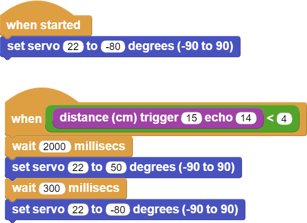

Piggy Bank¶
Introduction¶
In this project, you will make yourself a very enjoyable and cute piggy bank. You will use the servo motor and ultrasonic distance sensor while making the piggy bank.
Project Details and Algorithm¶
Ultrasonic sensors are sensors that show electrical change by being affected by sound waves. These sensors send sound waves at a frequency that our ears cannot detect and produce distance information by calculating the return time of the reflected sound waves. We, the programmers, develop projects by making sense of the measured distance and the changes in distance. Parking sensors in the front and back of the cars are the places where ultrasonic sensors are most common in daily life. Do you know the creature that finds its way in nature with this method? Because bats are blind, they find their way through the reflections of the sounds they make. Many of us like to save money. It is a very nice feeling that the money we save little by little is useful when needed.
Different types of buttons are used in electronic systems. Locked buttons, push buttons, switched buttons… There is 1 push button on Picobricks. They work like a switch, they conduct current when pressed and do not conduct current when released. In the project, we will understand the pressing status by checking whether the button conducts current or not. If it is pressed, it will light the LED, if it is not pressed, we will turn off the LED.
HC-SR04 ultrasonic distance sensor and SG90 servo motor will be used in this project. When the user leaves money in the hopper of the piggy bank, the distance sensor will detect the proximity and send it to the Picobricks. According to this information, Picobricks will operate a servo motor and raise the arm, throw the money into the piggy bank and the arm will go down again.
Wiring Diagram¶

You can program and run Picobricks modules without any wiring. If you are going to use the modules by separating them from the board, then you should make the module connections with the Grove cables provided.
MicroPython Code of the Project¶
from machine import Pin, PWM
import utime
#define the libraries
servo=PWM(Pin(21,Pin.OUT))
trigger = Pin(15, Pin.OUT)
echo = Pin(14, Pin.IN)
#define the input and output pins
servo.freq(50)
servo.duty_u16(6750)
def getDistance():
trigger.low()
utime.sleep_us(2)
trigger.high()
utime.sleep_us(5)
trigger.low()
while echo.value() == 0:
signaloff = utime.ticks_us()
while echo.value() == 1:
signalon = utime.ticks_us()
timepassed = signalon - signaloff
distance = (timepassed * 0.0343) / 2
print("The distance from object is ",distance,"cm")
return distance
#calculate distance
while True:
utime.sleep(0.01)
if int(getDistance())<=5: #if the distance variable is less than 5
servo.duty_u16(4010)
utime.sleep(0.3) #wait
servo.duty_u16(6750)
Truco
If you rename your code file to main.py, your code will run after every boot.
Arduino C Code of the Project¶
#include <Servo.h>
#define trigPin 15
#define echoPin 14
//define the libraries
Servo servo;
void setup() {
Serial.begin (9600);
pinMode(trigPin, OUTPUT);
pinMode(echoPin, INPUT);
//define the input and output pins
servo.attach(21); //define the servo pin
}
void loop() {
long duration, distance;
digitalWrite(trigPin, LOW);
delayMicroseconds(2);
digitalWrite(trigPin, HIGH);
delayMicroseconds(10);
digitalWrite(trigPin, LOW);
duration = pulseIn(echoPin, HIGH);
distance = (duration/2) / 29.1;
//calculate distance
if (distance < 5) { //if the distance variable is less than 5
Serial.print(distance);
Serial.println(" cm");
servo.write(179);
}
else if (distance>5) { // if the distance variable is greater than 5
Serial.print(distance);
Serial.println(" cm");
servo.write(100);
}
}
Coding the Project with MicroBlocks¶
 |
Nota
To code with MicroBlocks, simply drag and drop the image above to the MicroBlocks Run tab.